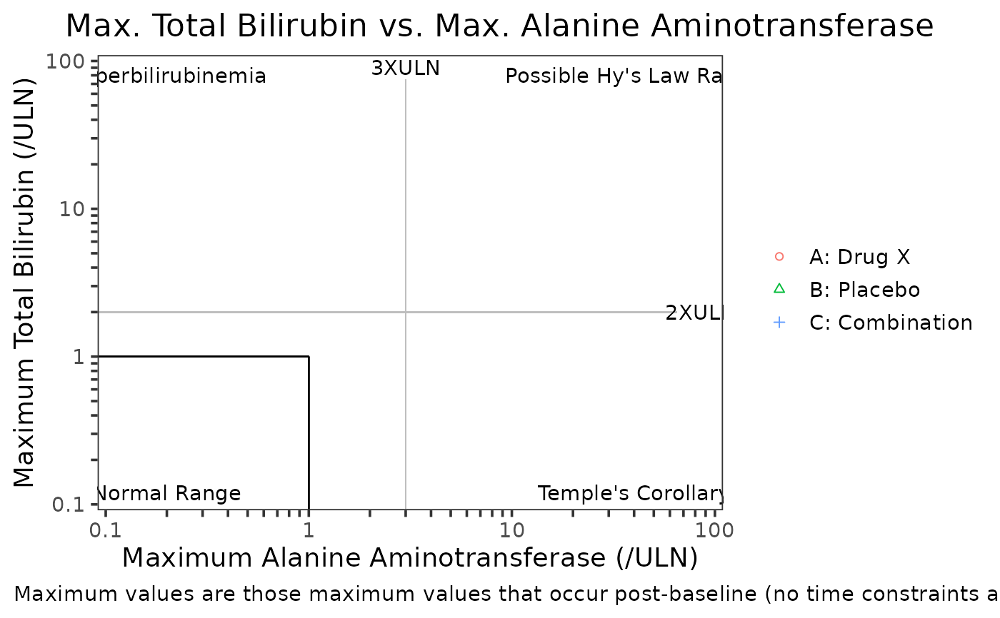

A scatter plot typically used to display maximum total bilirubin values (TBL) versus maximum alanine transaminase (ALT) values.
g_hy_law( id, term, aval, arm, term_selected, anrhi, folds = c(3, 2), text = c("Normal Range", "Hyperbilirubinemia", "Possible Hy's Law Range", "Temple's Corollary"), caption = paste("Maximum values are those maximum values that occur post-baseline", "(no time constraints and not necessarily concurrent events)."), title = "Max. Total Bilirubin vs. Max. Alanine Aminotransferase", xlab = "Maximum Alanine Aminotransferase (/ULN)", ylab = "Maximum Total Bilirubin (/ULN)" )
Arguments
| id | unique subject identifier. |
|---|---|
| term | the term of the observation. |
| aval | analysis value. |
| arm | treatment arm. Used as fill color in the plot. |
| term_selected | string vector of length 2 - the two terms selected to be used in the plot. First value corresponds to parameter plotted on the x-axis. Second value corresponds to that plotted on the y-axis. |
| anrhi | the high limit of normal range. |
| folds | numeric vector of length two. Indicates the position of the reference lines to be drawn. Default c(3, 2) corresponds to a line at position 3 on the x-axis and 2 on the y-axis. |
| text | string vector of length four with the label to be shown on each quadrant. First value corresponds to label shown in the bottom left quadrant. Subsequent values move through the graph clockwise. |
| caption | string of text for footnote. Details of methodology can be shown here. |
| title | string of text for plot title. |
| xlab | string of text for x axis label. |
| ylab | string of text for y axis label. |
Value
plot object
Details
This graphic is based upon the eDISH (evaluation of Drug Induced Serious Hepatotoxicity) plot of Watkins et. al. in a 2008 publication from Hepatology. Maximum values are defined as the maximum post-baseline value at any time during the entire length of the observation period. Both axes are in log scale to control for the dispersion of the data. The values are plotted in 'times upper limit of normal' where a value of 1 would mean that the result was normal. Any value above or below 1 would be considered above the upper limit or normal or below the upper limit of normal respectively. For instance, a value of 3 would be read as '3 times the upper limit of normal'. Reference lines are included to determine various states, based upon clinical interpretation of the values and includes the following:
* Hyperbilirubinemia TBL at least 2 xULN and ALT less than 3 xULN * Normal Range TBL <= 1 xULN and ALT <= 1xULN * Temple’s Corollary TBL <= 1 xULN and ALT at least 3 xULN * Possible Hy's Law TBL at least 2 xULN and ALT at least 3 xULN
This plot can easily be adjusted for other lab parameters and reference ranges as needed. Consultation with a clinical expert to determine which associations would be clinically meaningful and how to interpret those associations is recommended.
There is no equivalent STREAM output.
Author
Katie Withycombe (withycok) katie.withycombe@roche.com
Amy Franklin (frankla4) amy.franklin@roche.com
William Holmes (holmesw) william.holmes@roche.com
Examples
library(scda) library(dplyr) # Note: CRP is being used in place of Bilirubin here because this is the only available data # available in SCDA latest_dfs <- synthetic_cdisc_data("latest") adsl <- latest_dfs[["adsl"]] adlb <- latest_dfs[["adlb"]] %>% mutate(ANRHI = 50) # Example 1, - Hy's law template (3 and 2 X ULN) g_hy_law( id = adlb$USUBJID, term = adlb$PARAMCD, aval = adlb$AVAL, arm = adlb$ARM, term_selected = c("ALT", "CRP"), anrhi = adlb$ANRHI, folds = c(3, 2), text = c("Normal Range", "Hyperbilirubinemia", "Possible Hy's Law Range", "Temple's Corollary"), caption = paste("Maximum values are those maximum values that occur", "post-baseline (no time constraints and not necessarily concurrent events)."), title = "Max. Total Bilirubin vs. Max. Alanine Aminotransferase", xlab = "Maximum Alanine Aminotransferase (/ULN)", ylab = "Maximum Total Bilirubin (/ULN)" )# Example 2, - change the quadrant lines and labels g_hy_law( id = adlb$USUBJID, term = adlb$PARAMCD, aval = adlb$AVAL, arm = adlb$ARM, term_selected = c("ALT", "CRP"), anrhi = adlb$ANRHI, folds = c(10, 15), text = c("Quadrant 1", "Quadrant 2", "Quadrant 3", "Quadrant 4"), caption = paste("Maximum values are those maximum values that occur", "post-baseline (no time constraints and not necessarily concurrent events)."), title = "Max. Total Bilirubin vs. Max. Alanine Aminotransferase", xlab = "Maximum Alanine Aminotransferase (/ULN)", ylab = "Maximum Total Bilirubin (/ULN)" )